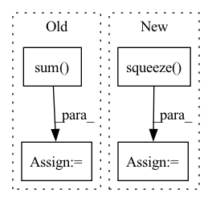

Pattern ID :31775

Before Change
).unsqueeze(1)
norm = F.normalize(norm, p=2, dim=-1)
head = head - torch.sum(head * norm, dim=-1, keepdim=True) * norm
tail = tail - torch.sum(tail * norm, dim=-1, keepdim=True) * norm
score = (head + relation) - tail
score = self.gamma.item() - torch.norm(score, p=1, dim=2)
After Change
)
h = h.squeeze(1)
r = r.squeeze(1)
t = t.squeeze(1)
if len(sample.shape) == 3:
sample = sample.unsqueeze(1)
norm = self.relation_norm(sample[:, 1])
h = self._transfer(e=h, norm=norm)
t = self._transfer(e=t, norm=norm)
if mode == "head-batch":
score = h + (r - t)
else:
return (h + r).shape, t.shape
score = (h + r) - t
In pattern: SUPERPATTERN
Frequency: 4
Non-data size: 4
Instances
Fragment ID: 92808074
Project Name: raphaelsty/mkb
Commit Name: b011b91b4468b0d642af90229fa132774ea1e0d3
Time: 2020-09-21
Author: raphael.sourty@gmail.com
File Name: kdmkb/models/transh.py
M Class Name: TransH
N Class Name: TransH
M Method Name: forward(4)
N Method Name: forward(2)
M Parent Class: base.BaseModel
N Parent Class: base.BaseModel
M File Name: kdmkb/models/transh.py
N File Name: kdmkb/models/transh.py
M Start Line: 62
M End Line: 79
N Start Line: 64
N End Line: 89
'>
Before Change
R_tgt_src = out["R"][0, -1, :2, :2]
t_st_in_t = out["t"][0, -1, :2, :]
error = tgt_p - (R_tgt_src @ src_p + t_st_in_t)
mah = torch.sqrt(torch.sum(error * error * torch.exp(out["match_weights"][-1]), dim=0).squeeze())
error2_sqrt = torch.sqrt(torch.sum(error * error, dim=0).squeeze())
plt.imshow(radar, cmap="gray")
After Change
scores = out["scores"][-1]
if scores.size(0) == 3:
scores = scores[1] + scores[2]
scores = scores.squeeze().detach().cpu().numpy()
plt.imshow(scores, cmap="inferno")
plt.colorbar()
plt.title("log det weight (weight score vis)")
'>
Fragment ID: 92808093
Project Name: utiasasrl/hero_radar_odometry
Commit Name: c1043c84c77f1a20b667d981d4cd286cb378c71a
Time: 2021-01-25
Author: david.yoon@robotics.utias.utoronto.ca
File Name: utils/vis.py
M Class Name: AnonimousClass
N Class Name: AnonimousClass
M Method Name: draw_batch_steam(3)
N Method Name: draw_batch_steam(3)
M Parent Class:
N Parent Class:
M File Name: utils/vis.py
N File Name: utils/vis.py
M Start Line: 55
M End Line: 134
N Start Line: 95
N End Line: 122
'>
Before Change
def regulariziation_function_ar(weights):
// abs_weights = torch.abs(weights)
abs_weights = torch.abs(weights.clone())
abs_weights = torch.sum(abs_weights, dim=0)
reg = torch.div(2.0, 1.0 + torch.exp(-3.0 * abs_weights.pow(1.0 / 3.0))) - 1.0
return reg
def regulariziation_function_trend(weights, threshold=None):
After Change
// abs_weights = torch.abs(weights)
abs_weights = torch.abs(weights.clone())
reg = torch.div(2.0, 1.0 + torch.exp(-3.0 * abs_weights.pow(1.0 / 3.0))) - 1.0
reg = torch.mean(reg).squeeze()
return reg
def regulariziation_function_trend(weights, threshold=None):
Regularization of coefficients based on AR-Net paper
'>
Fragment ID: 92808098
Project Name: ourownstory/neural_prophet
Commit Name: f927330590c99b842aeab28004e76930abd34bd2
Time: 2020-06-04
Author: oskar.triebe@merantix.com
File Name: neuralprophet/utils.py
M Class Name: AnonimousClass
N Class Name: AnonimousClass
M Method Name: regulariziation_function_ar(1)
N Method Name: regulariziation_function_ar(1)
M Parent Class:
N Parent Class:
M File Name: neuralprophet/utils.py
N File Name: neuralprophet/utils.py
M Start Line: 22
M End Line: 23
N Start Line: 42
N End Line: 43
'>
Before Change
// Compute policy loss
d_e_clip = torch.clip(d_e, 0.1, 0.9).detach()
d_o_clip = torch.clip(d_o, 0.1, 0.9).detach()
bc_loss = -log_pi_e.sum(1)
corr_loss_e = -log_pi_e.sum(1) * (self.eta / d_e_clip + self.eta / (1 - d_e_clip))
corr_loss_o = -log_pi_o.sum(1) * (1 / (1 - d_o_clip))
p_loss = self.alpha * bc_loss.mean() - corr_loss_e.mean() + corr_loss_o.mean()
After Change
// Compute policy loss
d_e_clip = torch.squeeze(d_e).detach()
d_o_clip = torch.squeeze(d_o).detach()
d_o_clip[d_o_clip < 0.5] = 0.0
bc_loss = -torch.sum(log_pi_e, 1)
'>
Fragment ID: 92808071
Project Name: ryanxhr/dwbc
Commit Name: b3791e408af7125fde12cda1cdeaefbaa400aacc
Time: 2022-06-30
Author: xuhaoran8@jd.com
File Name: algos/DWBC.py
M Class Name: DWBC
N Class Name: DWBC
M Method Name: train(4)
N Method Name: train(4)
M Parent Class: object
N Parent Class: object
M File Name: algos/DWBC.py
N File Name: algos/DWBC.py
M Start Line: 132
M End Line: 154
N Start Line: 121
N End Line: 150